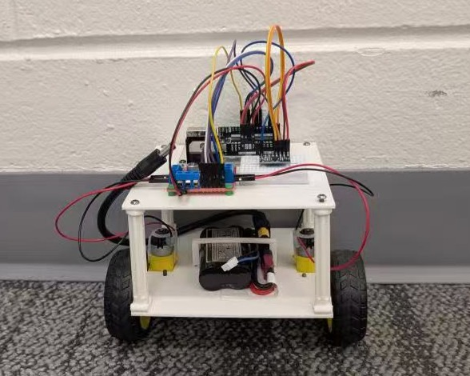
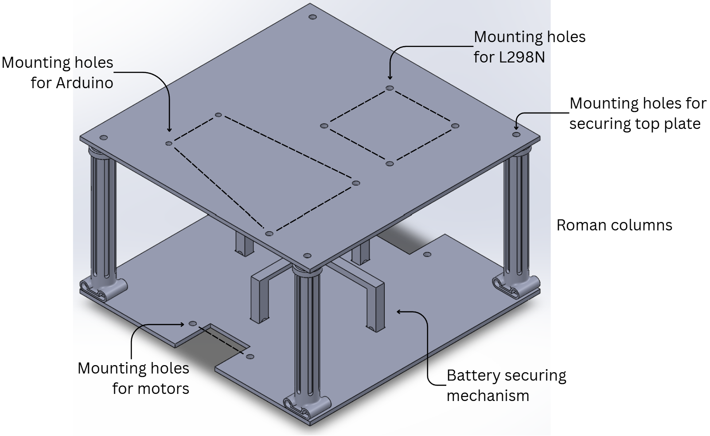
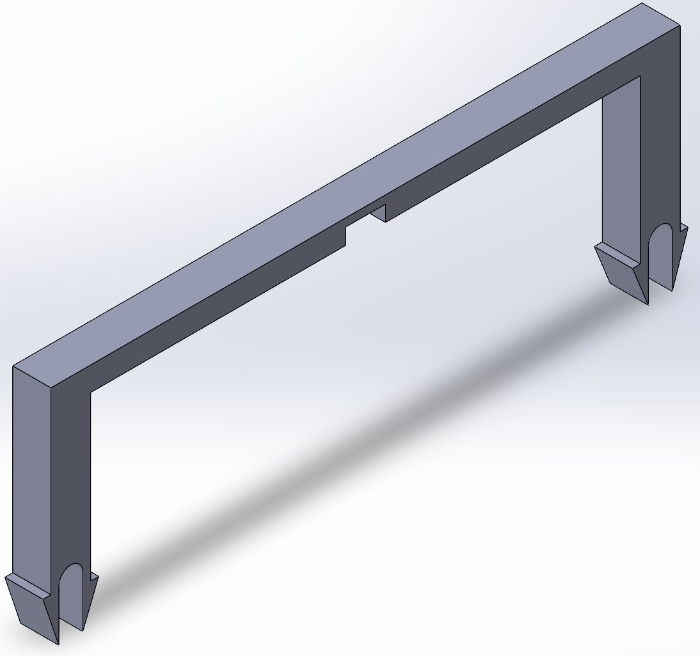
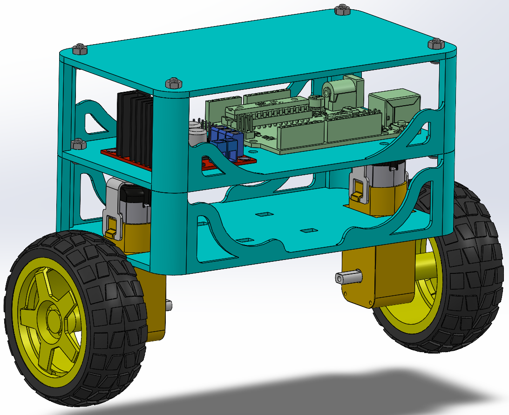

During the Waterloo Senior Engineering Competition, my team built a beam-balancing robot using an Arduino Uno, L298N motor driver, and MPU6050 gyroscope. Due to limited programming experience at the time, our implementation relied heavily on empirical tuning rather than automated control. This inspired a teammate and me to design our own self-balancing robot.

Arduino Uno: Central microcontroller, simple to use and has an extensive ecosystem.
L298N Motor Driver: Allows bi-directional control, simple to wire and implement.
MPU6050 Gyroscope & Accelerometer: Measures vehicle tilt and orientation in real time to feed the balancing algorithm.
DC Gear Motors (×2): Easily wired and very accessible.
7.4V Li-ion Battery: Rechargeable and provided sufficient power to the entire system.
As we were building foundational skills, component selection prioritized well-documented hardware with reliable community resources to ensure smooth troubleshooting during system integration.
To maximize stability, the initial structure aimed for a low center of mass, placing heavy elements like the battery near the base while keeping processing electronics on top. The base used perpendicular snap-fit beams to lock the battery in place, while four 3D-printed columns supported the top tier as a fun aesthetic challenge.


I designed the battery housing, which included a horizontal beam with a central alignment slot for the other vertical beam to pass through. To address stress concentrations during assembly, I added fillets to the slot joints and chamfered the baseplate mounting holes for smoother component insertion.
Hands-on testing highlighted key areas for improvement, leading to a second-generation design focused on structural stability and practical assembly
Aspect Ratio & Stability: The original square layout had a narrow stability margin that caused rapid tipping. The new version is more rectangular, which allows for more reaction time, increasing the capability to self-right.
Optimal Gyro Placement: The revised three-tier structure places the MPU6050 along the center-of-mass axis at the top, delivering cleaner sensor data to the controller than off-centre mounting.
Reliable Mounting: The 3D-printed snap locks for the battery were prone to deformation and snapping over time. Replacing them with zip-tie friction mounts simplified tolerances while providing a secure, repeatable hold.
Standardized Hardware: Fasteners were upgraded from printed pins to off-the-shelf screws and nuts, eliminating printing tolerance constraints.
Side Covers: Extra precautions in case the electronics fall out.
